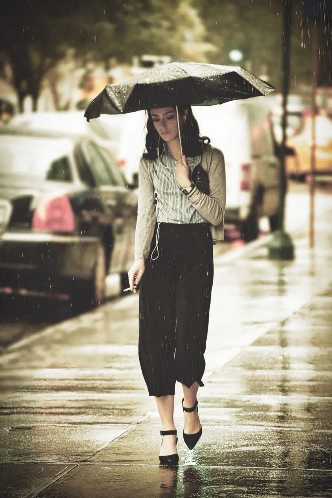
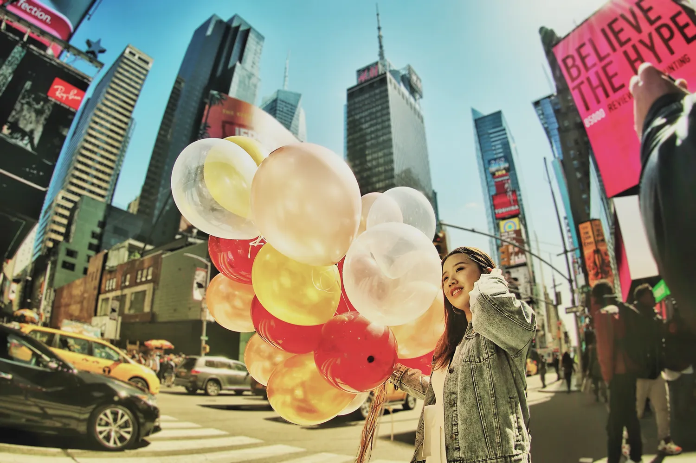
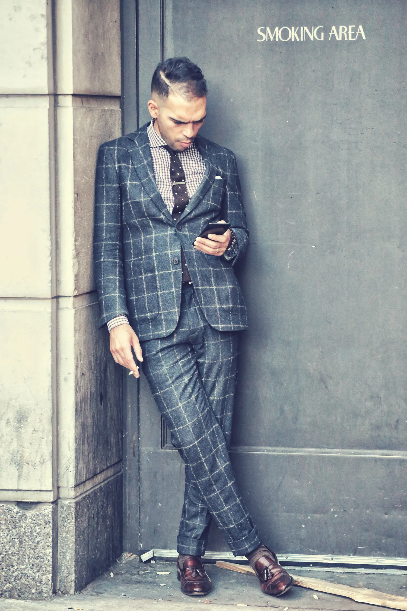

Identitás. Brand és vizuális pozicionálás egységes képi nyelven.
Kurált válogatás vizuális pozicionáláshoz: portrék, élethelyzetek és környezeti képek, amelyek segítenek, hogy egy személyes márka weboldalon, sajtóban, előadásokon és közösségi felületeken is egységes maradjon.

Identitás
A brand fotó akkor erős, ha vizuális pozicionálásként működik. Nem szép képek halmazát készítjük el, hanem olyan stratégiai brand képeket, amelyek weboldalon, médiában, LinkedInen és nyilvános kommunikációban is következetesen képviselik az embert, a céget vagy a gondolatot.
Az eredménynek először emberinek kell hatnia, és csak utána professzionálisnak. Ezen a ponton válik a fotó vizuális pozicionálássá.
Identitás
A brand fotózás akkor válik értékessé, amikor nem dekorációként működik, hanem vizuális pozicionálásként. Az arc, a környezet, a gesztus, a város, a fény és a történet egyetlen következetes képi nyelvvé áll össze. Bécs és Budapest között ez különösen fontos azoknak, akiknek nemcsak láthatónak, hanem érthetőnek is kell lenniük.
Kurált kollázs
Bánhalmi Norbert brand és vizuális pozicionálási képe, amely személyt, hangulatot és környezetet kapcsol egységes vizuális identitássá.










Építsünk olyan vizuális nyelvet, amely minden felületen következetesen működik.
Vezetett ajánlatkérés indításaElég pontos az üzlethez. Elég emberi ahhoz, hogy emlékezzenek rá.
A fotózást mindig a felhasználás felől tervezzük: weboldal, LinkedIn, sajtó, belső kommunikáció vagy döntéshozói közeg. A képi nyelv még a kamera előtt eldől.
A cél nem az önbizalom eljátszása. Inkább az, hogy lekerüljön minden felesleges zaj, és a kép nyugodt, pontos, bizalmat építő legyen.